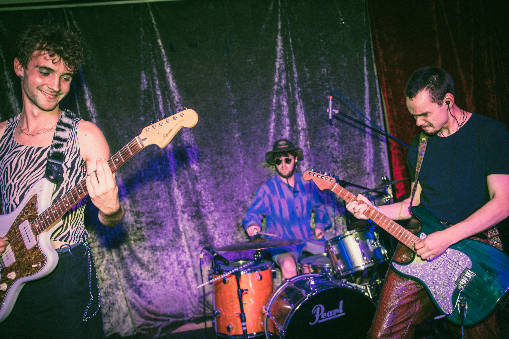

KUDRE
Our Latest single, My Design is out now! Click the record to stream.

Bio:
Kudre is a three-piece alt-rock band hailing from South East London. Our music delves into the raw and honest facets of life, drawing inspiration from a diverse range of influences. Known for our intense and visceral sound, we create music that resonates deeply with listeners, capturing the darker themes that often go unspoken. Explore our latest releases, upcoming shows, and more through the links provided. Join us on this musical journey and experience the unfiltered energy of Kudre.

PINK!
Kudre’s latest single “Pink” reflects on the themes of mistakes and accountability. Hailing from Southeast London, Kudre channels influences like Nirvana and Red Hot Chili Peppers. The song opens with “I’ve got a rhythm/But the rhythm don’t play,” capturing the struggle of finding one's groove amidst life's challenges. With powerful vocals, energetic guitar, and dramatic bass, "Pink" is an anthem of frustration and resilience. Kudre aims to “bring meaning back into rock music,” delivering a raw, authentic experience reminiscent of live performances. Check out the full article here.
Play Me!

0:00 / 0:00